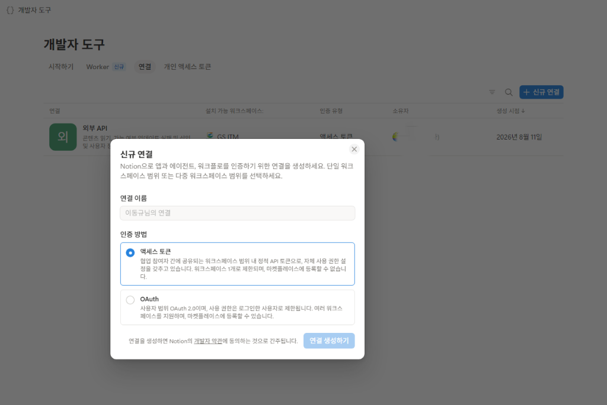
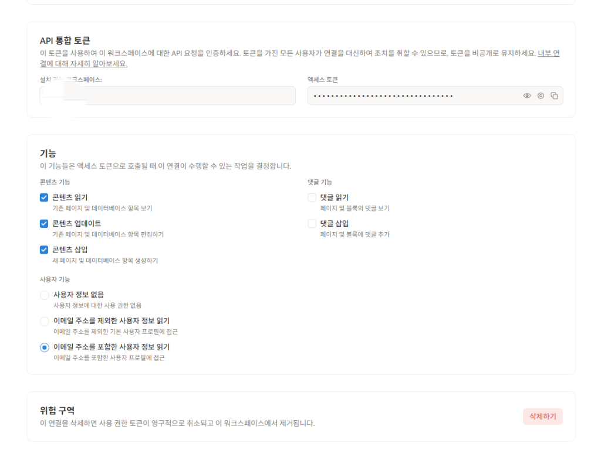
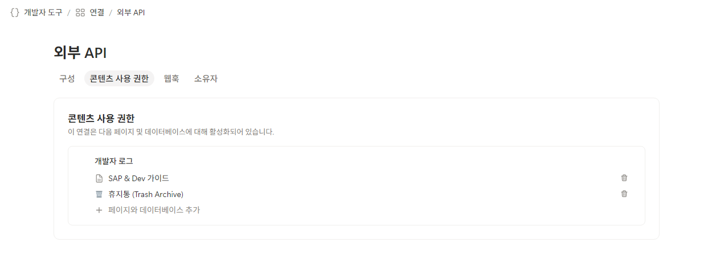
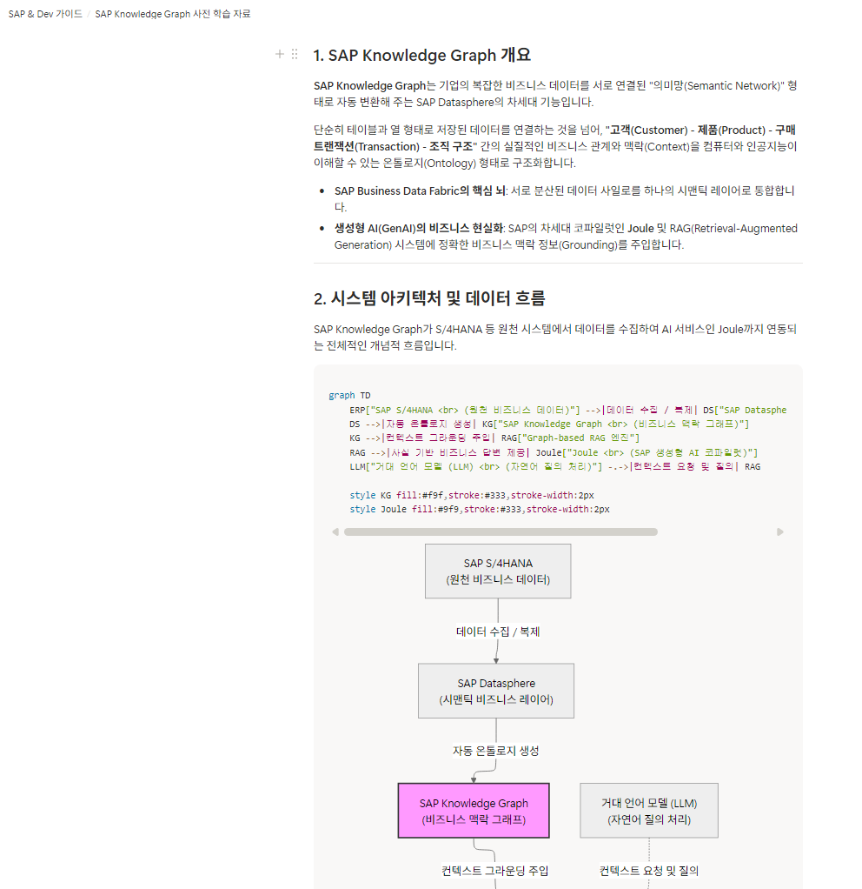

<title>Notion AI Studio - 노션 문서를 CLI로 쓰고 정리하기</title>
<meta charset="UTF-8" />
<meta name="viewport" content="width=device-width, initial-scale=1.0" />
<meta name="description" content="프롬프트로 노션 문서를 쓰고, 기존 글을 정리하고, 실수로 지운 내용도 항상 복구할 수 있는 오픈소스 CLI 도구입니다." />
<link rel="icon" href="data:image/svg+xml,%3Csvg xmlns='http://www.w3.org/2000/svg' viewBox='0 0 32 32'%3E%3Crect width='32' height='32' rx='8' fill='%230F172A'/%3E%3Ctext x='16' y='23' font-family='monospace' font-weight='700' font-size='18' fill='%2322C55E' text-anchor='middle'%3EN%3C/text%3E%3C/svg%3E" />
<link rel="preconnect" href="https://fonts.googleapis.com" />
<link rel="preconnect" href="https://fonts.gstatic.com" crossorigin />
<link href="https://fonts.googleapis.com/css2?family=Pretendard:wght@400;500;600;700&family=JetBrains+Mono:wght@400;500;600;700&display=swap" rel="stylesheet" />

<style>
  :root {
    --bg: #0F172A;
    --bg-elevated: #1E293B;
    --bg-muted: #272F42;
    --border: #334155;
    --fg: #F8FAFC;
    --fg-muted: #94A3B8;
    --accent: #22C55E;
    --accent-fg: #052E16;
    --warn: #F59E0B;
    --warn-bg: rgba(245, 158, 11, 0.08);
    --radius: 16px;
    --max-w: 1200px;
  }

  * { box-sizing: border-box; }

  html { scroll-behavior: smooth; }

  body {
    margin: 0;
    background: var(--bg);
    color: var(--fg);
    font-family: 'Pretendard', -apple-system, BlinkMacSystemFont, sans-serif;
    line-height: 1.6;
    -webkit-font-smoothing: antialiased;
  }

  .mono { font-family: 'JetBrains Mono', monospace; }

  .wrap {
    max-width: var(--max-w);
    margin: 0 auto;
    padding: 0 24px;
  }

  a { color: inherit; }

  h1, h2, h3 {
    font-weight: 700;
    letter-spacing: -0.02em;
    margin: 0;
  }

  p { color: var(--fg-muted); margin: 0; }

  /* Nav */
  header.site-nav {
    position: sticky;
    top: 0;
    z-index: 20;
    height: 64px;
    display: flex;
    align-items: center;
    background: rgba(15, 23, 42, 0.85);
    backdrop-filter: blur(12px);
    border-bottom: 1px solid var(--border);
  }

  .nav-inner {
    width: 100%;
    display: flex;
    align-items: center;
    justify-content: space-between;
    gap: 24px;
  }

  .brand {
    display: flex;
    align-items: center;
    gap: 10px;
    font-weight: 700;
    font-size: 16px;
    text-decoration: none;
    white-space: nowrap;
  }

  .brand-mark {
    width: 28px;
    height: 28px;
    border-radius: 8px;
    background: var(--accent);
    color: var(--accent-fg);
    display: flex;
    align-items: center;
    justify-content: center;
    font-family: 'JetBrains Mono', monospace;
    font-weight: 700;
    font-size: 14px;
    flex-shrink: 0;
  }

  .nav-links {
    display: flex;
    gap: 28px;
    list-style: none;
    margin: 0;
    padding: 0;
  }

  .nav-links a {
    text-decoration: none;
    font-size: 14px;
    color: var(--fg-muted);
    transition: color 0.2s ease;
  }

  .nav-links a:hover { color: var(--fg); }

  .btn {
    display: inline-flex;
    align-items: center;
    gap: 8px;
    padding: 12px 18px;
    min-height: 44px;
    border-radius: 999px;
    font-size: 14px;
    font-weight: 600;
    text-decoration: none;
    white-space: nowrap;
    border: 1px solid transparent;
    transition: transform 0.15s ease, background 0.2s ease, border-color 0.2s ease;
    cursor: pointer;
  }

  .btn:active { transform: scale(0.98); }

  .btn-accent {
    background: var(--accent);
    color: var(--accent-fg);
  }

  .btn-accent:hover { background: #2FE070; }

  .btn-ghost {
    background: transparent;
    color: var(--fg);
    border-color: var(--border);
  }

  .btn-ghost:hover { border-color: var(--fg-muted); }

  /* Hero */
  .hero {
    padding: 72px 0 96px;
  }

  .hero-grid {
    display: grid;
    grid-template-columns: 1.05fr 0.95fr;
    gap: 56px;
    align-items: center;
  }

  .hero h1 {
    font-size: clamp(32px, 4.4vw, 52px);
    line-height: 1.18;
    max-width: 16ch;
  }

  .hero .lede {
    margin-top: 20px;
    font-size: 17px;
    max-width: 46ch;
    color: var(--fg-muted);
  }

  .hero-ctas {
    margin-top: 32px;
    display: flex;
    gap: 12px;
    flex-wrap: wrap;
  }

  .terminal {
    background: var(--bg-elevated);
    border: 1px solid var(--border);
    border-radius: var(--radius);
    overflow: hidden;
    box-shadow: 0 24px 60px -24px rgba(0,0,0,0.55);
  }

  .terminal-bar {
    display: flex;
    gap: 6px;
    padding: 12px 16px;
    border-bottom: 1px solid var(--border);
  }

  .terminal-bar span {
    width: 10px;
    height: 10px;
    border-radius: 50%;
    background: var(--border);
  }

  .terminal-body {
    padding: 20px;
    font-family: 'JetBrains Mono', monospace;
    font-size: 13px;
    line-height: 1.9;
    overflow-x: auto;
  }

  .terminal-body .cmd { color: var(--fg); }
  .terminal-body .cmd::before { content: "$ "; color: var(--accent); }
  .terminal-body .out { color: var(--fg-muted); }
  .terminal-body .ok { color: var(--accent); }

  /* Section shell */
  section { padding: 96px 0; border-top: 1px solid var(--border); }

  .section-head { max-width: 640px; margin-bottom: 56px; }

  .section-head h2 {
    font-size: clamp(26px, 3vw, 36px);
  }

  .section-head p { margin-top: 14px; font-size: 16px; }

  /* Feature rows */
  .feature-row {
    display: grid;
    grid-template-columns: 1fr 1fr;
    gap: 56px;
    align-items: center;
  }

  .feature-row + .feature-row { margin-top: 96px; }

  .feature-row.reverse .feature-text { order: 2; }
  .feature-row.reverse .feature-visual { order: 1; }

  .feature-text h3 { font-size: 24px; }
  .feature-text p { margin-top: 14px; font-size: 15.5px; }

  .panel {
    background: var(--bg-elevated);
    border: 1px solid var(--border);
    border-radius: var(--radius);
    padding: 24px;
  }

  .diff-line {
    font-family: 'JetBrains Mono', monospace;
    font-size: 13px;
    padding: 3px 10px;
    border-radius: 6px;
    white-space: pre-wrap;
  }

  .diff-old { color: #FCA5A5; background: rgba(239,68,68,0.08); }
  .diff-new { color: #86EFAC; background: rgba(34,197,94,0.08); }
  .diff-muted { color: var(--fg-muted); }

  .explorer-row {
    display: flex;
    align-items: center;
    justify-content: space-between;
    padding: 12px 4px;
    font-size: 14px;
  }

  .explorer-row + .explorer-row { border-top: 1px solid var(--border); }

  .explorer-row .path { color: var(--fg-muted); font-family: 'JetBrains Mono', monospace; font-size: 12.5px; }

  /* Full width panel (explorer) */
  .panel-wide { margin-top: 96px; }

  /* Trust / two-col */
  .two-col {
    display: grid;
    grid-template-columns: 1fr 1fr;
    gap: 40px;
  }

  .two-col .card {
    background: var(--bg-elevated);
    border: 1px solid var(--border);
    border-radius: var(--radius);
    padding: 28px;
  }

  .two-col .card h3 { font-size: 18px; margin-bottom: 10px; }
  .two-col .card p { font-size: 14.5px; }

  .flow {
    display: flex;
    align-items: center;
    gap: 14px;
    flex-wrap: wrap;
    margin-bottom: 40px;
    font-family: 'JetBrains Mono', monospace;
    font-size: 13.5px;
  }

  .flow-node {
    background: var(--bg-elevated);
    border: 1px solid var(--border);
    border-radius: 10px;
    padding: 10px 14px;
  }

  .flow-arrow { color: var(--fg-muted); }

  /* Capability list */
  .cap-list {
    list-style: none;
    margin: 0;
    padding: 0;
    display: flex;
    flex-direction: column;
    gap: 12px;
  }

  .cap-list li {
    display: flex;
    gap: 10px;
    font-size: 14.5px;
    color: var(--fg);
    align-items: flex-start;
  }

  .cap-mark {
    flex-shrink: 0;
    font-family: 'JetBrains Mono', monospace;
    font-size: 13px;
    line-height: 1.6;
  }

  .cap-yes .cap-mark { color: var(--accent); }
  .cap-no .cap-mark { color: var(--warn); }

  /* Warning panel */
  .warn-panel {
    margin-top: 40px;
    background: var(--warn-bg);
    border: 1px solid rgba(245, 158, 11, 0.35);
    border-left: 3px solid var(--warn);
    border-radius: var(--radius);
    padding: 24px;
  }

  .warn-panel h3 {
    font-size: 16px;
    color: var(--warn);
    margin-bottom: 12px;
  }

  .warn-panel ul {
    margin: 12px 0 0;
    padding-left: 20px;
    display: flex;
    flex-direction: column;
    gap: 8px;
  }

  .warn-panel li { font-size: 14px; color: var(--fg-muted); }
  .warn-panel p { font-size: 14px; color: var(--fg-muted); }
  .warn-panel a { color: var(--fg); text-decoration: underline; }

  /* Steps */
  .steps { display: flex; flex-direction: column; gap: 48px; }

  .step {
    display: grid;
    grid-template-columns: 56px 1fr;
    gap: 20px;
  }

  .step-num {
    width: 40px;
    height: 40px;
    border-radius: 50%;
    background: var(--bg-elevated);
    border: 1px solid var(--border);
    display: flex;
    align-items: center;
    justify-content: center;
    font-family: 'JetBrains Mono', monospace;
    font-weight: 600;
    color: var(--accent);
  }

  .step h3 { font-size: 17px; margin-bottom: 8px; }
  .step p { font-size: 14.5px; }

  .step code {
    display: block;
    max-width: 100%;
    margin-top: 10px;
    font-family: 'JetBrains Mono', monospace;
    font-size: 12.5px;
    background: var(--bg-muted);
    border: 1px solid var(--border);
    border-radius: 8px;
    padding: 8px 12px;
    overflow-x: auto;
    white-space: pre;
  }

  .step img {
    margin-top: 16px;
    width: 100%;
    max-width: 520px;
    border-radius: 12px;
    border: 1px solid var(--border);
    display: block;
  }

  /* Footer */
  footer {
    border-top: 1px solid var(--border);
    padding: 40px 0;
  }

  .footer-row {
    display: flex;
    align-items: center;
    justify-content: space-between;
    flex-wrap: wrap;
    gap: 16px;
  }

  .footer-row p { font-size: 13.5px; }

  /* Reveal */
  .reveal {
    opacity: 0;
    transform: translateY(18px);
    transition: opacity 0.6s cubic-bezier(0.16,1,0.3,1), transform 0.6s cubic-bezier(0.16,1,0.3,1);
  }

  .reveal.is-visible { opacity: 1; transform: translateY(0); }

  @media (prefers-reduced-motion: reduce) {
    .reveal { opacity: 1; transform: none; transition: none; }
    html { scroll-behavior: auto; }
  }

  @media (max-width: 860px) {
    .hero-grid { grid-template-columns: 1fr; }
    .feature-row, .feature-row.reverse { grid-template-columns: 1fr; }
    .feature-row.reverse .feature-text,
    .feature-row.reverse .feature-visual { order: initial; }
    .two-col { grid-template-columns: 1fr; }
  }

  @media (max-width: 860px) and (min-width: 641px) {
    .nav-links { gap: 14px; }
    .nav-links a { font-size: 13px; }
  }

  @media (max-width: 640px) {
    section { padding: 64px 0; }
    .hero { padding: 48px 0 64px; }
    .wrap { padding: 0 18px; }
    .nav-links { display: none; }
  }
</style>

<header class="site-nav">
  <div class="wrap nav-inner">
    <a class="brand" href="#top">
      <span class="brand-mark">N</span>
      Notion AI Studio
    </a>
    <nav aria-label="주요 메뉴">
      <ul class="nav-links">
        <li><a href="#features">기능</a></li>
        <li><a href="#safety">안전장치</a></li>
        <li><a href="#limits">한계</a></li>
        <li><a href="#install">설치 방법</a></li>
      </ul>
    </nav>
    <a class="btn btn-accent" href="https://github.com/dongqdev/notion-sync" target="_blank" rel="noopener">
      GitHub에서 보기
    </a>
  </div>
</header>

<main id="top">
  <section class="hero" style="border-top: none;">
    <div class="wrap hero-grid">
      <div>
        <h1>노션 문서, AI로 쓰고 정리합니다</h1>
        <p class="lede">
          프롬프트로 새 페이지를 쓰고, 기존 글을 요약해 정리하고, 실수로 지운 내용도
          항상 복구할 수 있는 오픈소스 CLI 도구입니다.
        </p>
        <div class="hero-ctas">
          <a class="btn btn-accent" href="https://github.com/dongqdev/notion-sync" target="_blank" rel="noopener">GitHub에서 보기</a>
          <a class="btn btn-ghost" href="#install">설치 방법 보기</a>
        </div>
      </div>
      <div class="terminal reveal">
        <div class="terminal-bar" aria-hidden="true"><span></span><span></span><span></span></div>
        <div class="terminal-body">
<div class="cmd">notion-cli create "프로젝트 문서" "8월 회의록" "..."</div>
<div class="out ok">SUCCESS: Created "8월 회의록"</div>
<div class="out">&nbsp;</div>
<div class="cmd">notion-cli delete "8월 회의록"</div>
<div class="out ok">DELETE_SUCCESS: Archived and recorded in Trash Archive</div>
<div class="out">&nbsp;</div>
<div class="cmd">notion-cli restore "8월 회의록"</div>
<div class="out ok">RESTORE_SUCCESS: Restored</div>
        </div>
      </div>
    </div>
  </section>

  <section id="features">
    <div class="wrap">
      <div class="section-head reveal">
        <h2>무엇을 할 수 있나요</h2>
        <p>세 가지 기능이 하나의 CLI와 웹 화면에 모여 있습니다.</p>
      </div>

      <div class="feature-row reveal">
        <div class="feature-text">
          <h3>AI로 새 페이지 쓰기</h3>
          <p>
            주제와 프롬프트를 입력하면 제목, 개요, 실행 계획, 체크리스트까지 갖춘 노션
            문서를 자동으로 구성합니다. 기술 명세서, 회의록, 주간 보고서 같은 템플릿을
            고를 수 있고, 완성되면 원하는 상위 페이지 밑에 바로 생성됩니다.
          </p>
        </div>
        <div class="feature-visual panel">
          <div class="diff-line diff-muted"># markdown -> Notion block</div>
          <div class="diff-line diff-muted">## 실행 계획</div>
          <div class="diff-line diff-new">{ type: "heading_2", content: "실행 계획" }</div>
          <div class="diff-line diff-muted">- [ ] API 키 발급</div>
          <div class="diff-line diff-new">{ type: "to_do", content: "API 키 발급" }</div>
        </div>
      </div>

      <div class="feature-row reverse reveal">
        <div class="feature-text">
          <h3>기존 글 AI 정리</h3>
          <p>
            길고 복잡한 글을 3줄 요약과 핵심 키워드로 압축하고, 문단과 헤더를 다시
            구조화합니다. 본문 속에 흩어진 작업 항목은 체크리스트로 뽑아내 페이지
            하단에 그대로 추가합니다.
          </p>
        </div>
        <div class="feature-visual panel">
          <div class="diff-line diff-old">회의에서 나온 얘기: 일정 조정 필요하고 담당자는...</div>
          <div class="diff-line diff-muted">↓</div>
          <div class="diff-line diff-new">## 핵심 요약</div>
          <div class="diff-line diff-new">- [ ] 일정 조정 (담당: 홍길동)</div>
        </div>
      </div>

      <div class="panel-wide panel reveal">
        <h3 style="font-size:18px; margin-bottom:14px;">워크스페이스 탐색</h3>
        <p style="font-size:14.5px; margin-bottom:18px;">
          연결된 모든 페이지와 데이터베이스를 검색하고, 블록 구조를 미리 볼 수
          있습니다. 노션 링크를 찾아 헤매지 않아도 됩니다.
        </p>
        <div class="explorer-row">
          <span>휴지통 (Trash Archive)</span>
          <span class="path">/워크스페이스/휴지통</span>
        </div>
        <div class="explorer-row">
          <span>SAP & Dev 가이드</span>
          <span class="path">/워크스페이스/SAP & Dev 가이드</span>
        </div>
        <div class="explorer-row">
          <span>주간 보고서 - 8월 2주차</span>
          <span class="path">/워크스페이스/보고서</span>
        </div>
      </div>
    </div>
  </section>

  <section id="safety">
    <div class="wrap">
      <div class="section-head reveal">
        <h2>API 키와 원문은 항상 안전합니다</h2>
        <p>서버가 왜 필요한지, 삭제가 왜 삭제가 아닌지 숨기지 않고 설명합니다.</p>
      </div>

      <div class="flow reveal">
        <div class="flow-node">브라우저</div>
        <div class="flow-arrow">-&gt;</div>
        <div class="flow-node">로컬 서버 (포트 3001)</div>
        <div class="flow-arrow">-&gt;</div>
        <div class="flow-node">Notion API</div>
      </div>

      <div class="two-col reveal">
        <div class="card">
          <h3>왜 서버가 필요한가요</h3>
          <p>
            브라우저에서 Notion API를 직접 호출하면 API 키가 코드에 그대로
            노출되고, Notion도 브라우저에서의 직접 호출(CORS)을 막아둡니다.
            그래서 키는 서버의 .env에만 두고, 브라우저는 우리 서버에만 요청을
            보냅니다.
          </p>
        </div>
        <div class="card">
          <h3>삭제는 진짜 삭제가 아닙니다</h3>
          <p>
            Notion 공개 API에는 영구 삭제 기능이 없습니다. delete는 내부적으로
            페이지를 보관(archive) 처리하고 휴지통 페이지에 원본 링크를
            남길 뿐이라, restore 명령으로 언제든 되돌릴 수 있습니다.
          </p>
        </div>
      </div>
    </div>
  </section>

  <section id="limits">
    <div class="wrap">
      <div class="section-head reveal">
        <h2>API로 되는 것, 안 되는 것</h2>
        <p>Notion 공개 API 위에서 동작하기 때문에, API 자체의 한계를 그대로 물려받습니다.</p>
      </div>

      <div class="two-col reveal">
        <div>
          <ul class="cap-list">
            <li class="cap-yes"><span class="cap-mark">+</span> 새 페이지/DB 항목 생성 (헤더·불릿·번호목록·체크박스·코드+mermaid·표·토글·구분선·콜아웃)</li>
            <li class="cap-yes"><span class="cap-mark">+</span> 기존 페이지에 내용 추가, 100블록 넘는 긴 글도 자동 배치 처리</li>
            <li class="cap-yes"><span class="cap-mark">+</span> 페이지 전체 읽기, 검색, DB 항목 조회, 속성 수정</li>
            <li class="cap-yes"><span class="cap-mark">+</span> 삭제 = 보관(archive) + 복구(restore), 항상 되돌릴 수 있음</li>
            <li class="cap-yes"><span class="cap-mark">+</span> 안전한 글수정: 제안(propose-edit) → 원문 백업 후 교체(approve-edit)</li>
          </ul>
        </div>
        <div>
          <ul class="cap-list">
            <li class="cap-no"><span class="cap-mark">-</span> 블록 순서 변경, 페이지를 다른 위치로 옮기기 (Notion API에 없는 기능)</li>
            <li class="cap-no"><span class="cap-mark">-</span> 완전 영구삭제 (API 설계상 보관만 가능)</li>
            <li class="cap-no"><span class="cap-mark">-</span> 다른 통합에 페이지 공유 권한 부여 (Notion 화면에서 수동으로만 가능)</li>
            <li class="cap-no"><span class="cap-mark">-</span> 마크다운 링크·이미지 마크다운·4단계 이상 헤더·중첩 목록·취소선 (아직 미지원)</li>
          </ul>
        </div>
      </div>

      <div class="warn-panel reveal">
        <h3>주의사항: "정리" 요청 시 반드시 안전한 흐름을 거치세요</h3>
        <p>
          과거에 approve-edit가 원문을 휴지통에 백업할 때 목록을 한 번만 조회하고 다음 페이지를
          안 가져오는 버그가 있었습니다. 100블록이 넘는 긴 글을 정리하다가 백업이 일부만 된 채로
          원문이 지워진 사례가 있었습니다. 지금은 고쳐서 실제 회의록으로 재검증까지 마쳤지만
          (<a href="https://github.com/dongqdev/notion-sync/commit/8e97deb" target="_blank" rel="noopener">관련 수정</a>),
          아래는 계속 지키는 걸 권장합니다.
        </p>
        <ul>
          <li>원문을 직접 지우고 새로 쓰게 시키지 마세요. 항상 propose-edit → approve-edit 흐름을 거치면 원문이 백업된 뒤에만 교체됩니다.</li>
          <li>approve-edit·delete 실행 후 나오는 "Trash Page" 링크를 열어, 실제로 백업이 들어갔는지 한 번은 확인하는 습관을 들이세요.</li>
        </ul>
      </div>
    </div>
  </section>

  <section id="install">
    <div class="wrap">
      <div class="section-head reveal">
        <h2>설치 방법</h2>
        <p>Notion 통합 토큰을 발급받고, 로컬에서 서버와 웹 앱을 실행합니다.</p>
      </div>

      <div class="steps reveal">
        <div class="step">
          <div class="step-num">1</div>
          <div>
            <h3>Notion 통합 생성</h3>
            <p>Notion Developers Connections 페이지에서 새 연결을 만들고 액세스 토큰을 발급받습니다.</p>
            
          </div>
        </div>

        <div class="step">
          <div class="step-num">2</div>
          <div>
            <h3>API 토큰을 .env에 저장</h3>
            <p>발급받은 토큰과 필요한 권한(콘텐츠 읽기·업데이트·삽입)을 확인합니다.</p>
            <code>NOTION_API_KEY=ntn_xxxx...</code>
            
          </div>
        </div>

        <div class="step">
          <div class="step-num">3</div>
          <div>
            <h3>페이지에 통합 연결하기</h3>
            <p>
              통합을 만들었다고 모든 페이지에 자동으로 접근되지 않습니다. AI가
              읽거나 쓸 페이지마다 개별로 연결해야 하며, 연결 현황은 통합 설정의
              콘텐츠 사용 권한 탭에서 한눈에 확인할 수 있습니다.
            </p>
            
          </div>
        </div>

        <div class="step">
          <div class="step-num">4</div>
          <div>
            <h3>휴지통 페이지 ID 설정</h3>
            <p>
              백업으로 쓸 페이지를 하나 만들고 같은 통합에 연결한 다음, 페이지
              URL 끝에 붙은 32자리 ID를 복사합니다. 대시(-)는 있어도 없어도
              상관없습니다.
            </p>
            <code>NOTION_TRASH_PAGE_ID=3b9813eb-7677-8101-a4c1-d67d707c9506</code>
            <p style="margin-top:16px;">완성된 .env 파일은 이렇게 생겼습니다.</p>
            <code>NOTION_API_KEY=ntn_xxxx...
NOTION_TRASH_PAGE_ID=3b9813eb-7677-8101-a4c1-d67d707c9506
PORT=3001
VITE_API_BASE_URL=http://localhost:3001</code>
          </div>
        </div>

        <div class="step">
          <div class="step-num">5</div>
          <div>
            <h3>서버와 웹 앱 실행</h3>
            <p>백엔드와 프론트엔드를 각각 실행하고 브라우저에서 접속합니다.</p>
            <code>npm start</code>
          </div>
        </div>

        <div class="step">
          <div class="step-num">6</div>
          <div>
            <h3>에이전트에게 프롬프트로 시키기</h3>
            <p>
              진짜 사용법은 웹 화면 클릭이 아니라, Claude Code 같은 에이전트에게
              말로 시키는 겁니다. notion-cli는 에이전트가 대신 실행합니다.
            </p>
            <code>"회의록" 페이지 밑에 오늘 회의 내용 요약해서 새 페이지로 만들어줘

"주간 보고서" 페이지 정리해줘. 핵심 요약이랑 액션 아이템만 뽑아서 추가해줘

노션 휴지통에 뭐 들어있어?

SAP Knowledge Graph 사전 학습 자료 생성해줘.</code>
            <p style="margin-top:16px;">마지막 프롬프트로 실제 생성된 결과 페이지입니다.</p>
            
          </div>
        </div>
      </div>
    </div>
  </section>
</main>

<footer>
  <div class="wrap footer-row">
    <p>Notion AI Studio는 개인 워크스페이스용으로 만든 오픈소스 도구입니다.</p>
    <a class="btn btn-ghost" href="https://github.com/dongqdev/notion-sync" target="_blank" rel="noopener">GitHub에서 보기</a>
  </div>
</footer>

<script>
  (function () {
    var els = document.querySelectorAll('.reveal');
    if (!('IntersectionObserver' in window) || window.matchMedia('(prefers-reduced-motion: reduce)').matches) {
      els.forEach(function (el) { el.classList.add('is-visible'); });
      return;
    }
    var io = new IntersectionObserver(function (entries) {
      entries.forEach(function (entry) {
        if (entry.isIntersecting) {
          entry.target.classList.add('is-visible');
          io.unobserve(entry.target);
        }
      });
    }, { threshold: 0.15 });
    els.forEach(function (el) { io.observe(el); });
  })();
</script>
